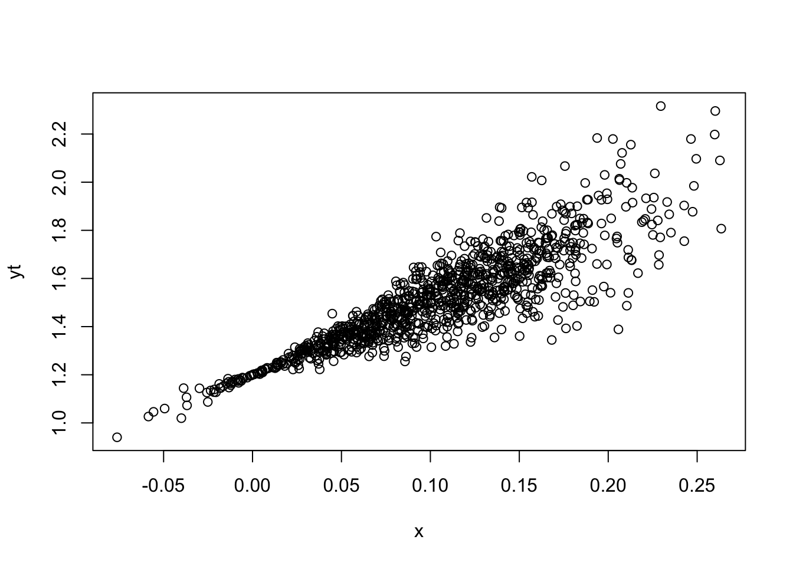
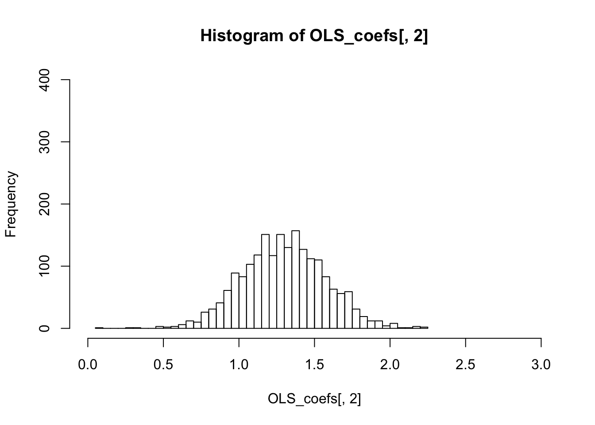

Heteroskedasticity
The purpose of this section is to show that OLS is not an efficient estimator when there is heteroskedasticity in the error term; instead, the GLS (In this case also called weighted least square) is better.
Assuming \(y_t\) can be written as a linear function of \(x\) and the error term \(\epsilon\) has heteroskedasticity \[y_t = 1.2 + 2.2 x_{t} + \epsilon_t \] \[ Var(\epsilon_t | x_t) = \sigma^2 x_{t}^2 \] To simulate \(y\) we do:
library(MASS)
library(matrixStats)
m=1000
x <- rnorm(m,0.1,0.06)
## assuming correlation in x
et <- rnorm(m,0,0.8)*x
yt <- 1.2 + 3*x+et
plot(x,yt)
In the plot, we observe the variance increase as x increase. Now we simulate again with smaller sample size (m=30) to see the variance of sampling distribution difference between OLS and WLS by repeating it by 1000 times (n=1000)) Then we do regress \(y\) on \(x\) using OLS and
Weight least square: \[ \frac{y_t}{x_{t}} = \frac{\alpha}{x_{t}} + \beta + \frac{\epsilon_t}{x_{t}} \] and then we get \[ Var(\frac{\epsilon_t}{x_{t}}) = \sigma ^2 \]
n=2000
OLS_coefs <- matrix(nrow=n,ncol=2)
WLS_coefs <- matrix(nrow=n,ncol=2)
for(i in 1:n) {
m=50
x <- rnorm(m,0.1,0.06)
## assuming correlation in x
et <- rnorm(m,0,0.8)*x
yt <- 1.2 + 1.3*x+et
regressY <- lm(yt~x)
OLS_coefs[i,] <- regressY$coefficients
## WLS
yWLS <- yt/x
xWLS <- 1/x
WLS <- lm(yWLS~xWLS)
WLS_coefs[i,1] <- WLS$coefficients[2]
WLS_coefs[i,2] <- WLS$coefficients[1]
}
colMeans(OLS_coefs)## [1] 1.200066 1.295839colMeans(WLS_coefs)## [1] 1.199826 1.300815colVars(OLS_coefs)## [1] 0.0004423139 0.0794147741colVars(WLS_coefs)## [1] 1.860682e-05 1.672354e-02hist(OLS_coefs[,2],breaks=40,xlim=c(0,3),ylim=c(0,400))
hist(WLS_coefs[,2],breaks=20,xlim=c(0,3),ylim=c(0,400))
The variance of the sampling distribution of WLS is much smaller than that of the OLS, and is therefore more effieicnt.